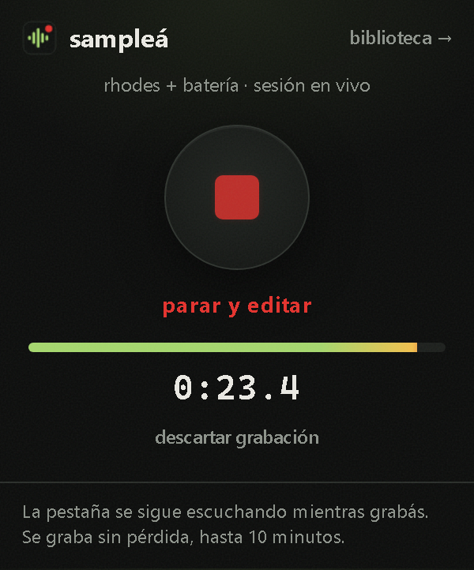
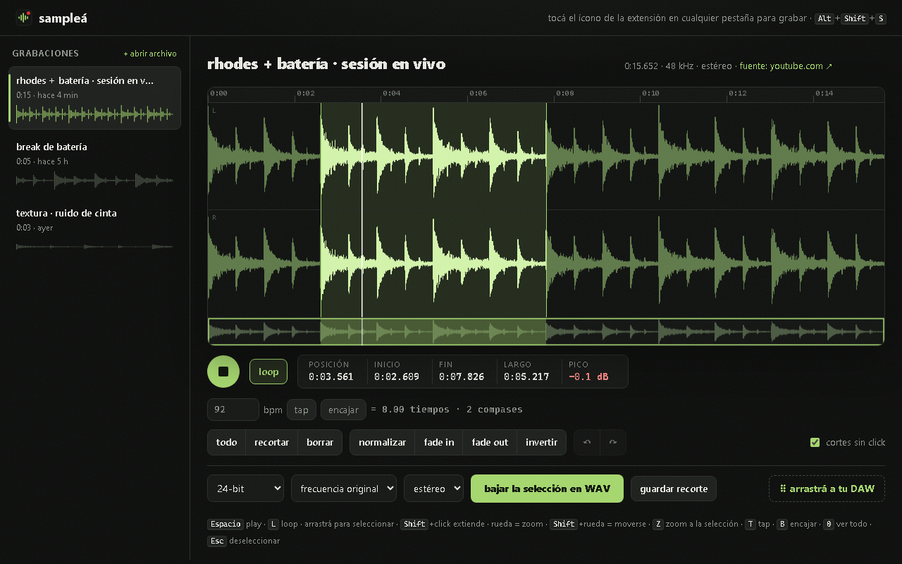

Grabá el audio de cualquier pestaña, recortá el sample y bajalo en WAV para tu DAW.
Gratis y de código abierto. No se sube nada a ningún lado.


Mientras sale en la Chrome Web Store, se instala así (tarda un minuto):
chrome://extensions (o edge://extensions) y activá el modo desarrollador.sampleá no tiene servidores, no usa analíticas y no se conecta a internet: las grabaciones se guardan en tu navegador y solo salen de ahí cuando vos las bajás. Más detalles en la política de privacidad. Respetá los derechos de autor del material que sampleás.
sampleá es gratis, sin publicidad y lo va a seguir siendo. Si te ahorró laburo, podés invitarme un café.